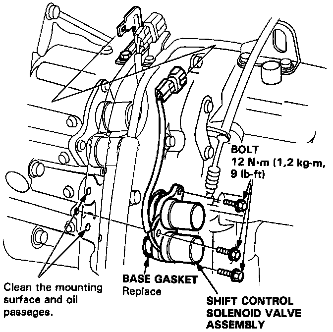

Shift Solenoid: Service and Repair

Replacement
1. Remove the three bolts and shift control solenoid valve assembly.
NOTE: Be sure to remove or replace the shift control solenoid valves A and B as an assembly.
2. Check the shift control solenoid valve oil passages for dust or dirt and replace as an assembly, if necessary.
3. Clean the mounting surface and oil passage of the shift control solenoid valve assembly, and install a new base gasket.
4. Check the connector for rust or dirt and reconnect it securely.